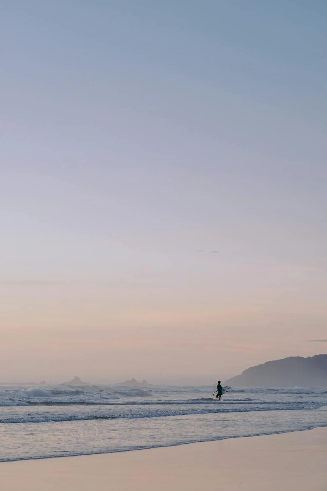
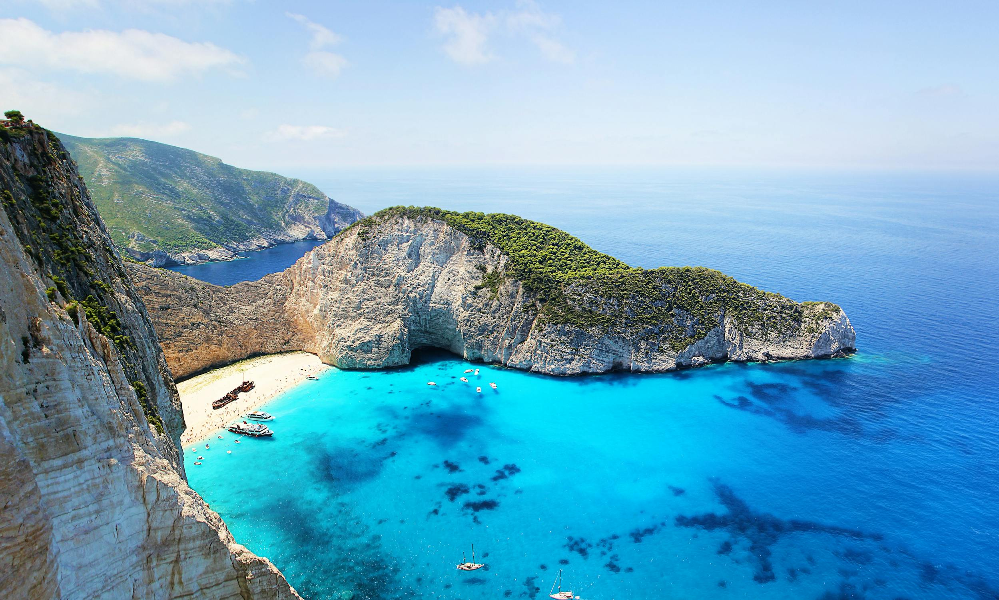
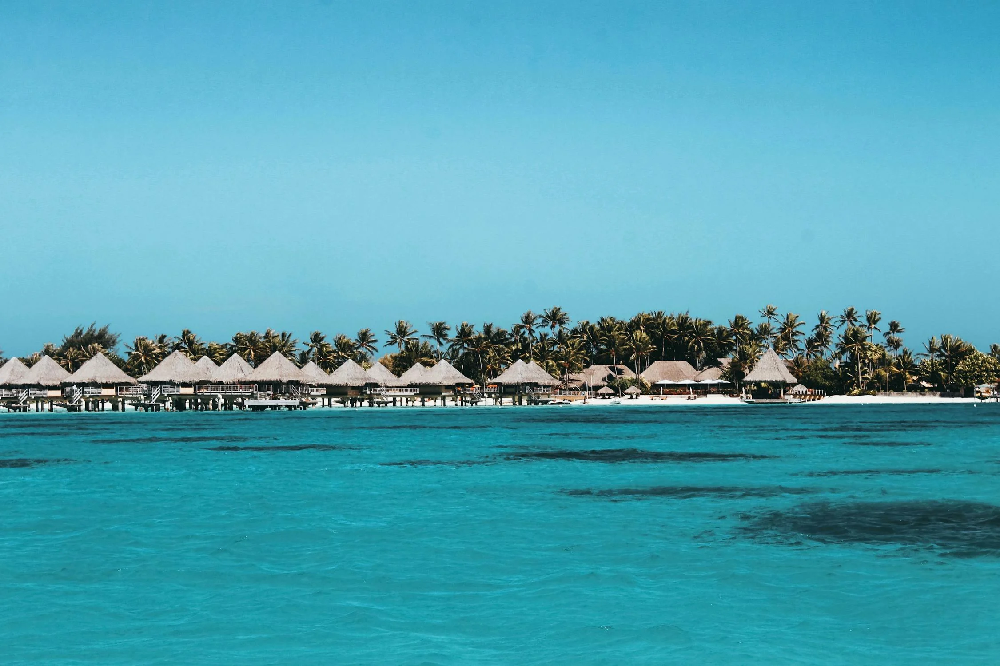

Les 3 plus belles plages du monde
Regardons
Plage de Whitehaven, Australie
 ce qu'il faut savoirLa plage de Whitehaven, située sur l'île Whitsunday dans le Queensland en Australie, est souvent décrite comme l'une des plus belles plages du monde. S'étendant sur sept kilomètres le long de la côte de l'île, cette plage paradisiaque est renommée pour son sable blanc pur et ses eaux cristallines. Le sable de Whitehaven est composé de 98 % de silice pure, ce qui lui donne sa couleur blanche éclatante et sa texture soyeuse unique. Contrairement à d'autres sables, celui-ci ne retient pas la chaleur, ce qui permet de marcher pieds nus sans se brûler, même sous le soleil brûlant de l'été australien. Les grains de sable sont si fins qu'ils ont été utilisés pour nettoyer les lentilles de télescopes, une anecdote qui souligne leur pureté et leur qualité exceptionnelle.
Plage de Navagio, Grèce
 ce qu'il faut savoirLa plage de Navagio, aussi connue sous le nom de la plage du Naufrage, est située sur l'île de Zante (ou Zakynthos) dans les îles Ioniennes en Grèce. Cette plage est l'une des plus emblématiques du pays, souvent photographiée et admirée pour sa beauté spectaculaire et son atmosphère unique. Navagio est enclavée au sein de falaises calcaires abruptes qui forment un écrin naturel autour de son sable blanc et de ses eaux bleu turquoise. Ce site isolé est uniquement accessible par bateau, ajoutant à son charme et à son mystère. La plage tire son nom de l'épave du navire Panagiotis, qui s'est échoué sur ses rives dans les années 1980. Cette épave rouillée est désormais une attraction emblématique, ajoutant une touche dramatique au paysage idyllique.
Plage de Bora Bora, Polynésie française
 ce qu'il faut savoirLa plage de Bora Bora, située dans l'archipel de la Société en Polynésie française, est synonyme de paradis tropical. Reconnue mondialement pour ses paysages de rêve, cette plage combine une beauté naturelle exceptionnelle avec un environnement de luxe. Les plages de Bora Bora sont célèbres pour leur sable blanc poudreux et leurs eaux cristallines aux nuances de bleu et de vert émeraude. L'une des plages les plus emblématiques est la plage de Matira, souvent décrite comme l'une des plus belles plages du monde. S'étendant sur plusieurs kilomètres, elle offre une vue imprenable sur le lagon turquoise et les majestueux monts volcaniques en arrière-plan.